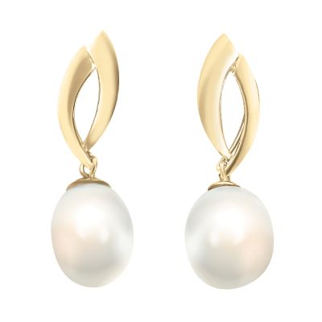
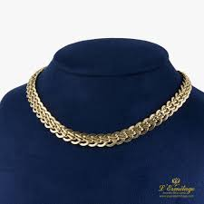
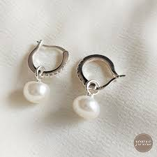
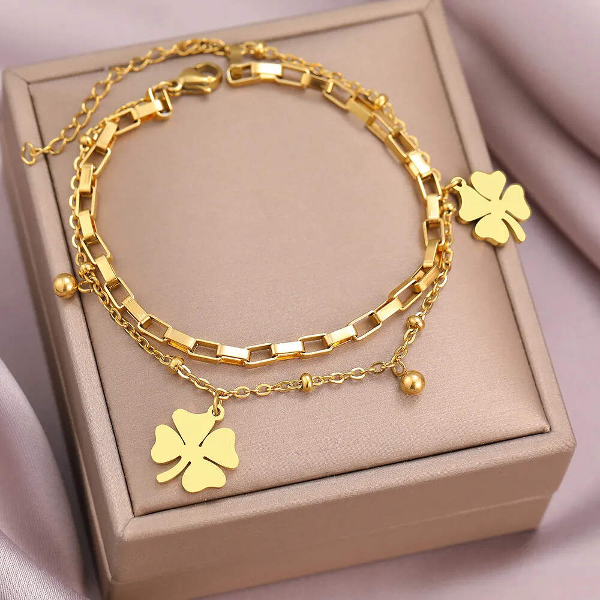

Anillo Solitario
Uno de los diseños más populares del mundo gracias a su elegante diamante central.
Descubre los diferentes tipos de joyas utilizadas alrededor del mundo, símbolos de elegancia, belleza y estilo.




Descubre una colección de joyas que reflejan elegancia, estilo y distinción. En este portal podrás explorar diferentes tipos de piezas utilizadas alrededor del mundo, con descripciones claras y atractivas que te permitirán conocer sus principales características. Desde delicados aretes hasta sofisticados relojes y pulseras, cada joya representa una forma única de expresar personalidad y buen gusto.
Las joyas para las manos representan elegancia, compromiso y estilo.
Uno de los diseños más populares del mundo gracias a su elegante diamante central.

Simboliza la unión y el compromiso entre dos personas.

Inspirado en diseños clásicos llenos de detalles elegantes.

Destaca por el intenso color azul de su piedra preciosa.

Diseño minimalista ideal para quienes prefieren la sencillez.
Los collares son joyas que realzan la belleza y el estilo personal, aportando elegancia y distinción a cualquier ocasión.

Un clásico símbolo de elegancia y sofisticación.

Una de las joyas más utilizadas por su brillo y durabilidad.

Diseñado para ocasiones especiales y eventos importantes.

Accesorio moderno que se ajusta elegantemente al cuello.

Pieza única creada con gran atención a los detalles.
Las joyas para las orejas destacan la expresión y el encanto personal, combinando elegancia, moda y sofisticación.

Pequeños, elegantes y versátiles. Perfectos para el uso diario y para complementar cualquier estilo.

Un accesorio clásico y moderno que aporta personalidad y elegancia a cualquier atuendo.

Un símbolo atemporal de distinción y delicadeza. Ideales para ocasiones especiales y looks refinados.

Diseños innovadores que abrazan la oreja, aportando un toque moderno y sofisticado sin esfuerzo.

Joyas llamativas que realzan la belleza del rostro con movimiento, brillo y elegancia.
Las joyas para las muñecas reflejan personalidad, buen gusto y elegancia, complementando cualquier estilo con un toque especial.

Una joya clásica y elegante que aporta brillo, sofisticación y estilo a cualquier ocasión.

Destaca por su línea continua de piedras brillantes, ofreciendo un toque de lujo y distinción.

Personalizable y significativa, permite llevar recuerdos y símbolos especiales en una sola joya.

Un accesorio delicado y refinado que combina la belleza natural de las perlas con la elegancia atemporal.

Diseño moderno y sofisticado que realza la muñeca con un estilo elegante y llamativo.
Las joyas para tobillos y pies aportan delicadeza y frescura, resaltando la belleza natural con un estilo único y atractivo.

Una joya elegante y brillante que realza la belleza del tobillo con un toque de lujo y sofisticación.

Clásica y versátil, combina fácilmente con cualquier estilo, aportando delicadeza y modernidad.

Un accesorio refinado que transmite elegancia y frescura, ideal para ocasiones especiales.

Colorida y juvenil, añade personalidad y un estilo relajado a cualquier conjunto.

Una joya discreta y encantadora que complementa el look con un detalle único y sofisticado.
Los relojes combinan funcionalidad y elegancia, convirtiéndose en accesorios que reflejan estilo, distinción y personalidad.

Una pieza de lujo que combina elegancia y prestigio, ideal para quienes buscan destacar con sofisticación.

Clásico y refinado, ofrece un estilo atemporal que complementa tanto atuendos formales como casuales.

Diseñado para brillar en ocasiones especiales, aporta glamour y exclusividad a cualquier look.

La combinación perfecta entre tecnología y estilo, ofreciendo funciones avanzadas sin perder elegancia.

Resistente, moderno y versátil, es una opción ideal para el uso diario con un toque de distinción.
Explora algunas de las joyas más representativas y elegantes de nuestra colección.
Disfruta de una melodía relajante mientras exploras nuestro portal de joyería.
Descubre la elegancia y el brillo de las joyas 24KL en este video promocional, donde se presentan piezas únicas que reflejan estilo, sofisticación y distinción.
Completa el siguiente formulario para compartir tus preferencias sobre joyería o enviarnos un mensaje.